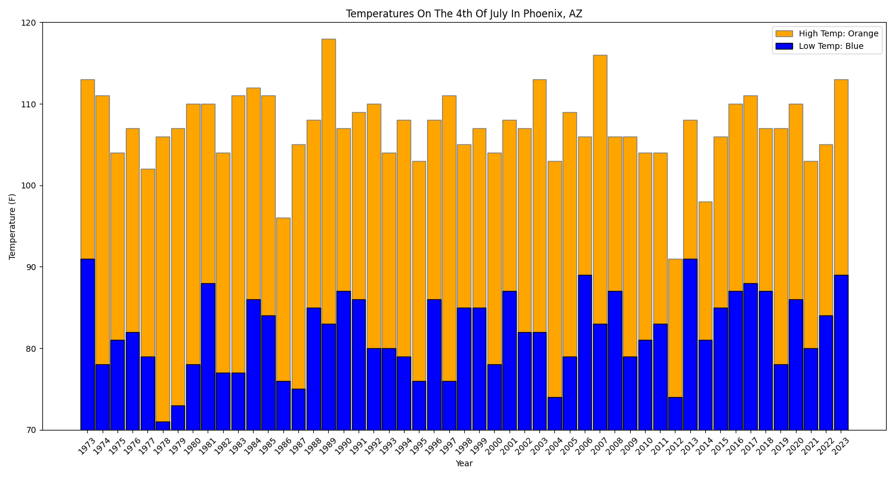
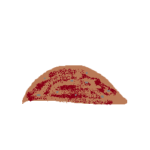

I made this short program to see if I could remember how to use parallelism after the semester I learned it.
This project was something I did because I wanted to get more familiar with making graphs in Python.
I made this small game of rock, paper, scissors when I was helping a team make a mod for Minecraft. I wanted to get a feel for some basic concepts.
This was my first experience with C++, I struggled with getting it installed, but once I did, I found it to be easy enough to understand the basics of.
Click count:
0
